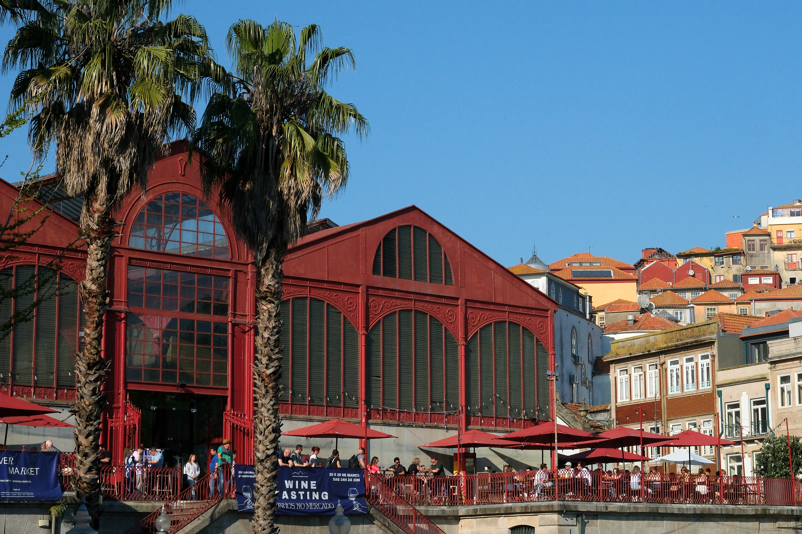
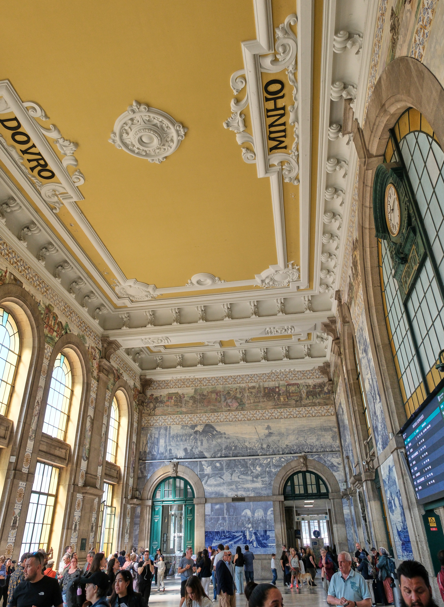
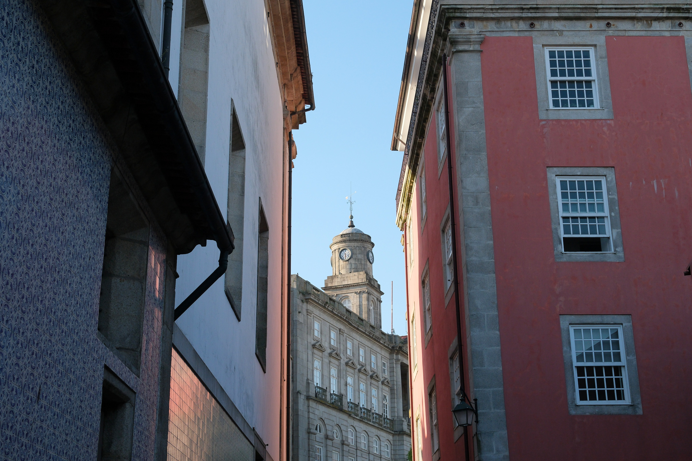
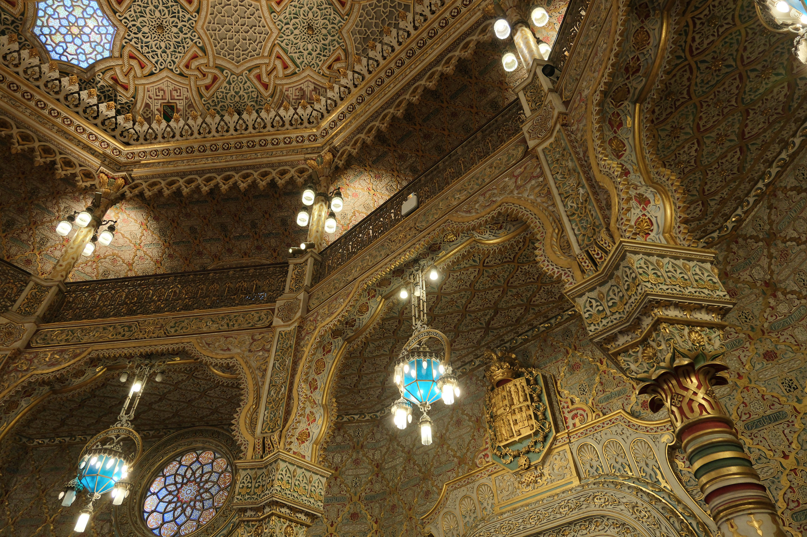
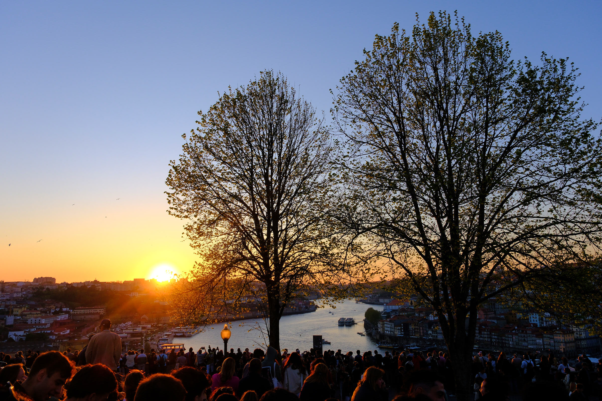
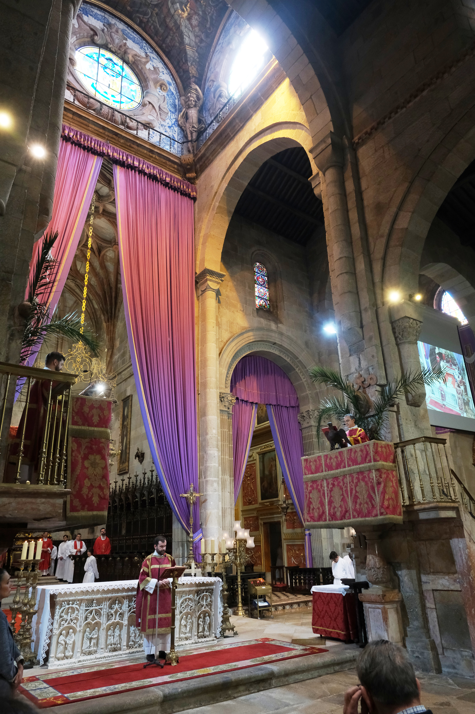
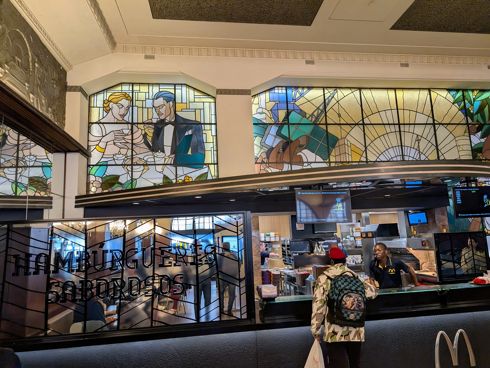
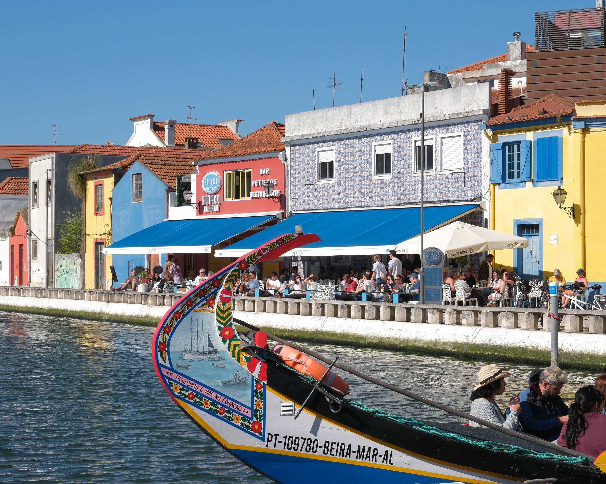
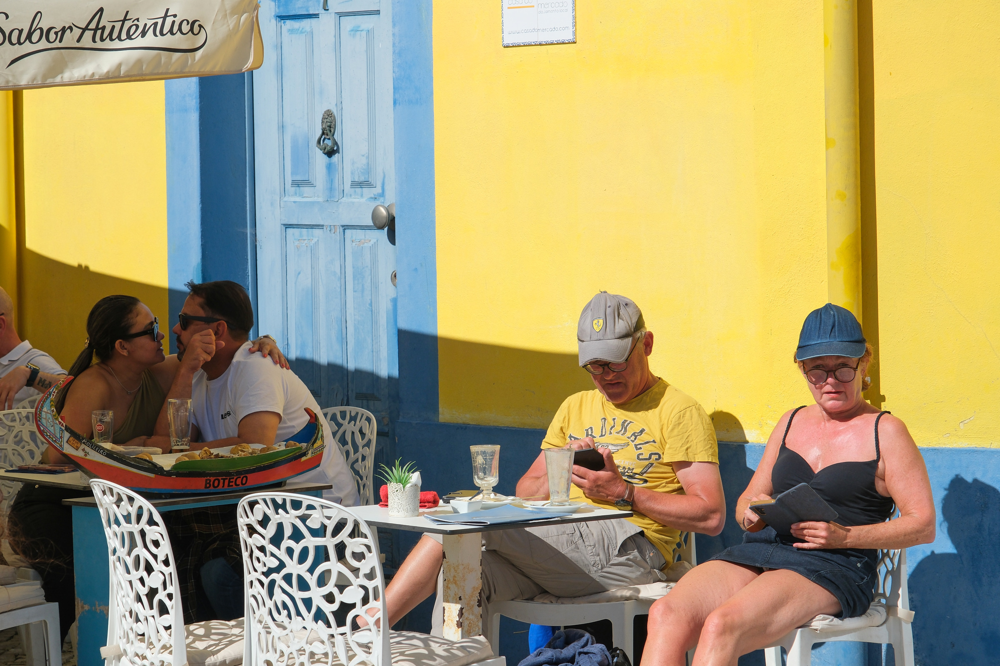
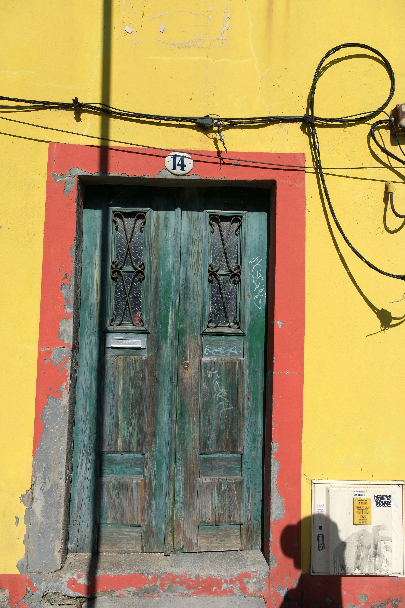

In five short days, Jacob, Ellery and I saw a wonderful slice of Portugal from our base in the city of Porto. This photo of Mercado Ferreira Borges set the stage. This iron-and-glass building is painted a bright red. It houses craft shops, restaurants and a nightclub. This collection of photos features the colorful sights we saw.

The São Bento train station displays tile artwork that tells a history of Portugal between the two major rivers, the Douro and the Minho.

They call Porto “the granite city” and there is indeed a lot of gray granite. I like this next picture because it shows the three major ways buildings are clad: in tile, stucco and granite.

And indeed there are a lot of beautiful tile buildings. Here’s a sampling


Porto has been an important commercial hub and that's not only for its namesake port wine. The Palácio da Bolsa is designed to impress that wealth upon visitors.

On the evening of our first day, we walked on a bridge high over the Douro River to a hill that is a favorite of sunset watchers. There were guitar players singing songs, an ample supply of Super Bock beer, and people strolling about. The crowd closely watched the sun and cheered when it dipped into the horizon.

In Braga, we enjoyed seeing the Sé resplendent in purple and velvet red, with colorful stained glass. Try to imagine the smell of incense for the full effect.

Spring was bursting out everywhere.


I am not prone to visiting McDonald’s when overseas yet the “Imperial McDonald’s” was a sight!

On the recommendation of Jacob and Ellery’s friends, we also went to Aveiro. This nearby town has canals and canal boats. The slower pace was a nice break from busy Porto. We enjoyed a ride up and down the canals and then enjoyed the local treat, a pastry called Ojos Moles de Aveiro.

I guess you could say “Aveiro is for lovers.”

There’s no better way to end this colorful tour then with a colorful door.
